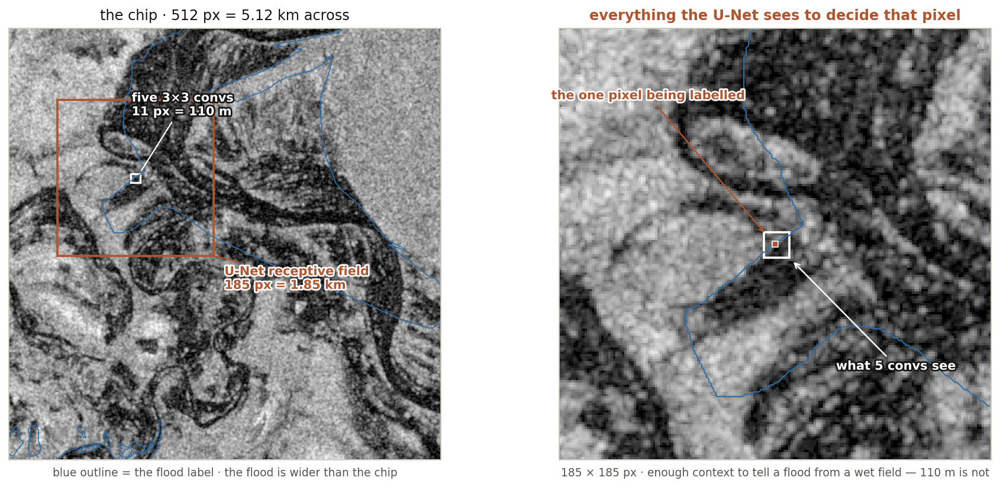
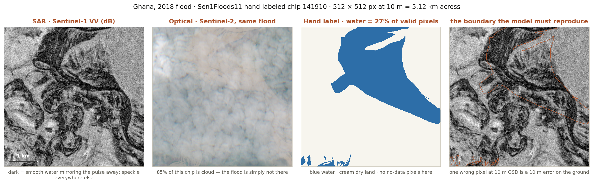

Radar saw this flood through the cloud that hid it from every optical sensor. The orange line is a human's answer. Today you build the machine that has to draw it.
Deep Learning Applications in Environmental Big Data · Prof. Hyunglok Kim · GISTImage: Sentinel-1 VV backscatter, Ghana flood 2018 — Sen1Floods11 hand-labeled chip 141910, speckle-filtered for display; the orange line is the hand label. Contains modified Copernicus Sentinel data, dataset CC BY 4.0 (Cloud to Street)
0:00 · Reading quiz
Quiz first — 5 minutes, closed book
5 questions on this week’s paper (Ronneberger et al. 2015, U-Net).
No AI, no notes.
Swap with your neighbor to grade.
Pass = 3 of 5.
Best 8 of 10 count, 0.75% each — an optional handwritten book summary forgives one wrong answer.
Week 4 · 55 min
Today in five blocks + journal club
1 · Convolution and the U-Net (12) — weight sharing, the receptive field derived on the board, and why the skips exist.
2 · Dense-prediction craft (11 · the headline) — the imbalance arithmetic on today’s real data, losses, how you average, tiling.
3 · Spatiotemporal extensions (8) — 3D convolution, ConvLSTM, factorized space–time; when convolution beats attention.
4 · The humbling, and multispectral input (8.5) — PANGAEA’s verdict on geospatial foundation models, and how to feed a model more than three bands.
5 · Reading framing + the metric contract (4 + 5 flex) — U-Net in one slide, and the board exercise on five ways an IoU can lie.
Journal club (30 · after break) — the three discussion questions from your entrance tickets; the drawn leader moderates. Lab briefing after.
Skills this week: dense-prediction heads · segmentation metrics · multispectral input handling · supervised baselinesEvery formula card, derivation and reference table still ships in this deck — see the Appendix after the lab slide
Part 1 · 12 min
Convolution and the U-Net
Part 1 · The second prior
The architecture is the other prior
Last week: the corpus is a prior. This week: the operator is a prior too — convolution, the operator a convolutional neural network (CNN) is built from, hard-codes two beliefs about the world.
Locality — what a pixel is depends mostly on its neighbors. Translation equivariance — a flood edge is a flood edge wherever it sits in the chip.
The price of those beliefs is paid in weights: on a 64 × 64 × 4 chip, one fully connected layer to 64 channels costs ≈ 4.3 × 109 weights; one 3 × 3 convolution to 64 channels costs 2,304.
Six orders of magnitude, and the convolution generalizes better. That is what a correct prior buys.
CNN “convolutional neural network” — a network whose main operator is the sliding window above, rather than a full matrix multiply.weight sharing — the same small filter is applied at every position, so one pattern is learned once and recognized everywhere; it is why the count collapses from billions to thousands.translation equivariance — shift the input, and the output shifts the same way. Not the same as invariance: for segmentation you want the answer to move with the object.where the numbers come from — dense: 64·64·4 inputs × 64·64·64 outputs ≈ 4.3 × 10⁹. Convolution: 3 × 3 × 4 input channels × 64 output channels = 2,304 weights, plus 64 biases.in the figure — left, every input–output pair owns a private number; right, one 3 × 3 tile of numbers is dragged across the image. Same layer, two assumptions.
Part 1 · The receptive field, derived
How far can one output pixel see?
Two quantities, carried layer by layer: the receptive field r (how many input pixels reach this unit) and the jump j (how many input pixels one step here moves).
Five stacked 3 × 3 convolutions, stride 1: r = 1 + 5·2 = 11 px — at 10 m ground sample distance that is 110 m.
Stride and pooling are what make it grow fast: each 2 × 2 pool doubles j, so the next 3 × 3 convolution adds twice as much as the last one.
The original U-Net, four poolings deep, reaches 185 px — 1.85 km at Sentinel-1 resolution.
receptive field — the window of input pixels that can change one output value. Everything outside it is invisible to that prediction, no matter how deep the network is.jump j — the input-pixel spacing between neighboring units at this layer; it is the running product of all strides so far, and it is why pooling is the cheap way to buy context.k, s — kernel size and stride of layer ℓ. A 2 × 2 max-pool is just k = 2, s = 2.GSD “ground sample distance” — metres covered by one pixel; 10 m for Sentinel-1 and Sentinel-2. It is the exchange rate between pixels and the world, and it is the only reason 185 px means anything.in the figure — read bottom-up: one unit at the top, widening down to the input. The cone widens by 2 px per 3 × 3 convolution until the pool doubles j; after that the same convolution widens it by 4.
Same recursion for dilated convolutions with keff = d·(k − 1) + 1 — full layer-by-layer table in the Appendix
Part 1 · Context vs location
Pooling buys context and spends your boundary

Deep enough to see the floodplain, sharp enough to place the waterline — a plain encoder cannot do both: by the bottleneck, that 185 px window has been reduced to a handful of cells.
The bottleneck knows what is here; it has thrown away where the edge was.
the 11 px box — everything five stacked 3 × 3 convolutions can use. At 10 m that is 110 m: enough to see that a pixel is dark, not enough to know whether it is a flood, a fish pond or a road.the 185 px box — the original U-Net's receptive field, 1.85 km. It contains the river, the levee and the dry fields, which is what makes the centre pixel decidable.downsampling — each pool halves the grid, so after four pools a 512 px chip is 32 px across and one cell stands for 160 m of ground. That is the resolution the bottleneck thinks in.in the figure — the flood is wider than the whole chip, and even the U-Net's window covers about a seventh of it. Context is not a luxury here; it is the task.
Sen1Floods11 v1.1, Ghana chip 141910 · Sentinel-1 VV, 10 m · boxes drawn at true pixel scale
Part 1 · The U-Net
U-Net: pay for context, then buy the boundary back
Each decoder level is handed two things: the upsampled semantic map from below, and the encoder map from the same resolution. Concatenate, then convolve — the network learns how much of each to trust.
That is all a skip connection is. It is also why U-Net is still the default dense-prediction architecture eleven years later.
encoder–decoder — the contracting half builds meaning at low resolution, the expanding half puts it back on the pixel grid. Alone, the decoder would be guessing where the edges were.skip connection — a direct copy of an encoder feature map into the decoder level of matching size, concatenated along the channel axis. Not the same as a residual connection, which adds.upsampling — going back up: either a learned transposed convolution or a plain interpolation followed by a convolution. The Appendix card says why the second is usually safer.dense prediction — one label for every pixel, as against one label per image. Segmentation, regression of a continuous field and change detection are all dense prediction.in the figure — the blocks narrow and deepen going down (grid halves, channels double) and the dashed orange lines are the skips, each joining levels of equal resolution.
Ronneberger, Fischer & Brox 2015, arXiv:1505.04597 — ~31 M parameters, trained on 30 images
Part 1 · What the skips carry
The skips carry what the bottleneck cannot store
The bottleneck is 32 × 32 for a 512 px chip: one cell per 160 m of ground. A waterline that moves by 3 pixels does not move at all in there.
The encoder's early map is the opposite: it holds edges, speckle texture and exact position, and knows almost nothing about what they mean.
The decoder needs both, at the same time, at the same place — that is the whole design.
On ImageNet a 3-pixel error moves a cat's ear. At 10 m GSD it is 30 m of floodplain, and the deliverable is a map someone evacuates from.
Ronneberger's network uses valid convolutions: a 572 px input yields a 388 px output. The 92-pixel border it drops is exactly the context each edge pixel would have been missing.
valid vs same padding — “valid” computes only where the filter fits entirely inside, so the output shrinks; “same” pads the border with zeros to keep the size, and quietly tells the network that the world outside the chip is zero.572 → 388 — the U-Net paper's own numbers: 184 pixels lost, 92 on each side, which equals its receptive-field radius. The architecture refuses to answer where it cannot see.high-frequency information — edges and texture, the first thing downsampling destroys and the last thing a boundary metric forgives.why 10 m matters — the same pixel error means a different thing per sensor: 3 px is 30 m on Sentinel-2 and about 100 km on ERA5. Always quote errors in metres, not pixels.
Discussion question 1 this afternoon: what exactly do the skips carry, and why does it matter more at 10 m than on ImageNet?
Part 1 · Watch at home
The architecture twice: once in the abstract, once on satellite imagery
patchify — cutting a large scene into fixed-size tiles so a network can consume it; the second video does this live, and Part 2 explains why the tile borders then need care.one-hot labels — a mask stored with one channel per class instead of one integer per pixel; the usual first bug when a tutorial's class count does not match yours.in the thumbnails — left, the architecture in the abstract; right, the same network on imagery that looks like your lab's.
Optional context, not assigned — the assigned video (AlexNet, 18 min) is in the Appendix and its summary is due with Note 04
Part 2 · 11 min · the headline
Dense-Prediction Craft
Part 2 · Look at the data first
One chip of today’s lab, four ways

Same place, same flood. The optical sensor lost it to cloud; the radar kept it — this is why the lab's ablation is S1-only vs S2-only vs fused, and why the answer is not obvious.
VV — a radar channel: transmitted vertically, received vertically. Smooth water reflects the pulse away from the satellite, so flooded ground goes dark; that darkness is the whole signal you are about to learn to segment.speckle — the grain in every SAR (synthetic aperture radar) image: wavelets scattered inside one pixel interfere. It is physics, not sensor noise, and it is the texture a convolution has to learn to see through.dark ≠ water — smooth roads, dry sand and radar shadow are dark too. Panel 4 shows dark areas outside the label; that is exactly why a threshold is not a flood map.in the figure — 85% of the optical chip is brighter than 0.16 top-of-atmosphere reflectance, which is cloud. The label still exists, because the annotator had the radar.
Sen1Floods11 v1.1, Ghana chip 141910 · rendered for this lecture from gs://sen1floods11 · Bonafilia et al. 2020, CVPR Workshops
Part 2 · The imbalance arithmetic
Accuracy is a lie on this dataset — here is the receipt
All 446 hand-labeled Sen1Floods11 chips, 101.0 M valid pixels. Water is 10.6% of them. Per chip the median is 2.5%, and 52 chips contain no water at all.
Predictor
Accuracy
IoU (water)
Precision
Recall
“always dry” — predict zero everywhere, no model, no data
89.4%
0.000
—
0.000
Otsu threshold on VV — the classical method, shipped with the dataset
92.2%
0.493
0.616
0.711
Accuracy separates a real method from doing nothing by 2.8 points. Intersection over Union separates them by everything.
IoU = TP / (TP + FP + FN) — the true negatives, which are 89% of the pixels, never enter the fraction. That is the entire point.
Your report gets three rows, always: the do-nothing baseline, the classical baseline, your model.
IoU “intersection over union”, also called the Jaccard index — the overlap between predicted water and true water, divided by their union. 1.0 is perfect, 0 means you and the truth share no pixel.TP, FP, FN, TN — true positive, false positive, false negative, true negative. Accuracy is (TP + TN) / everything, which is why a rare-class problem hands it away for free.Otsu's method — a 1979 algorithm that picks the threshold splitting a histogram into two clumps. Sen1Floods11 ships it as a layer, so it is a free, honest, non-neural baseline.precision, recall — of the pixels you called water, how many were (precision); of the water that was there, how many you found (recall). The threshold you pick after training trades one for the other.where these numbers come from — computed for this lecture: LabelHand against S1OtsuLabelHand, all 446 chips, pixels valid in both. Nothing here is quoted from a paper; the lab recomputes it.
Sen1Floods11 v1.1 hand-labeled subset · 10.7 M water pixels of 101.0 M valid · reproduce it in lab before you train anything
Part 2 · Losses
Four losses, and what each one actually optimizes
Cross-entropy — per-pixel, decomposable, well-behaved gradients. Every pixel votes equally, so the rare class is outvoted 9 to 1.
Weighted CE — multiply the rare class's term by w. One dial, immediate effect on recall, and it does not change what the model can represent, only what it cares about.
Dice — 1 − 2|P∩G| / (|P| + |G|), a differentiable stand-in for IoU. Optimizes the shape of the whole prediction, not each pixel; unstable when the chip is empty.
Focal — −(1 − p)γ log p, γ ≈ 2: down-weights the easy pixels the model already gets right, so gradient mass moves to the boundary.
Practical recipe for the lab: cross-entropy + Dice, summed — CE keeps the gradients sane early, Dice pulls the metric you report. Add class weights only if recall stays dead.
The loss is a surrogate. You descend cross-entropy and you report IoU — exactly the W2 point about smooth stand-ins for a metric with no useful slope.
decomposable — a sum over pixels, so a batch's gradient is the average of per-pixel gradients. Dice is not: its value depends on every pixel in the chip at once, which is why an all-dry chip makes it wobble.soft Dice — computed on probabilities rather than hard labels, so it is differentiable; add a small ε to numerator and denominator or an empty chip divides by zero.γ “gamma” — the focusing exponent in focal loss. γ = 0 is plain cross-entropy; γ = 2 means a pixel already predicted at p = 0.9 contributes 1% of its usual gradient.class weight w — how much one water pixel counts against one dry pixel. Setting it to the inverse frequency (≈ 8.4 here) is the usual first guess, not a law.
Milletari et al. 2016 (V-Net, Dice) · Lin et al. 2017 (focal loss) · full loss zoo with gradients: Appendix
Part 2 · How you average
The same predictions score 0.49 or 0.22 — you choose
One predictor, the Otsu baseline. One dataset, all 446 chips. Four defensible numbers.
Pooled over every pixel (“micro”) — one confusion matrix for the whole set
IoU 0.493
Mean of per-chip IoU (“macro”) — every chip counts the same, big flood or small
0.311
Median of per-chip IoU — the typical chip, not the typical pixel
0.217
25 chips have no water in the truth and none predicted — IoU is 0/0 there
undefined
Call those 25 chips 1.0 and the macro score jumps; call them 0.0 and it collapses. Nobody is cheating, and the headline moves by more than a good architecture change.
And it is not stable across space: the same method scores 0.78 on the Mekong chips and 0.15 on the Somalia ones.
So state it: pooled or per-chip, how empty chips are handled, which events are in the test set — three sentences in Note 04, before any model comparison.
micro vs macro — micro pools all pixels then divides once, so big floods dominate; macro averages per-chip scores, so a 40-pixel pond counts as much as a city under water.the empty-chip problem — IoU of an empty truth with an empty prediction is 0/0. Every library picks a convention; almost none of them document it on the plot.per-event spread — the same algorithm, eleven floods: Mekong 0.78, Bolivia 0.70, Spain 0.67, India 0.53, Ghana 0.41, Pakistan 0.15, Somalia 0.15. The method did not change; the landscape did.why it is a W2 problem — a random split mixes chips of one flood across train and test, so the easy events prop up the score. The Bolivia hold-out exists to stop that.
All four numbers computed for this lecture from the same predictions · per-event table: Appendix
Part 2 · Borders and tiling
Every tile edge is a place the model was blind
A scene is bigger than a chip, so inference is tiled — and at a tile's edge, half the receptive field is off the image.
Zero-padding tells the network the world ends in black; the visible result is a seam of wrong pixels on every tile boundary.
The fix is the U-Net paper's own: predict on overlapping tiles, keep only the middle, and mirror the image at the true scene edge. Halo ≈ half the receptive field — today that is ~92 px.
Same discipline when you cut training chips: a chip whose label touches the border teaches the model that floods stop at chip edges.
overlap-tile strategy — the U-Net paper's name for it: read a tile with a margin, write only the interior. Standard in every production segmentation pipeline; absent from most tutorials.halo, margin — the extra border read but not written. Half the receptive field is the honest size; less is a choice to accept some seam.mirror padding — at the true edge of a scene there is no context to read, so the image is reflected outward. It is a lie, but a locally plausible one, unlike zeros.in the figure — left, four tiles meeting edge to edge and the seam that follows; right, each tile read wide (dashed) and written narrow (solid), so every written pixel had full context.
Ronneberger et al. 2015, §2 — the overlap-tile strategy and mirroring · full recipe with numbers: Appendix
Part 3 · 8 min
Spatiotemporal Extensions
Part 3 · Three ways to spend time
Three ways to put time into a convolution
Counts are for one layer, 3 × 3 kernels, C = 64 channels in and out. The ranking is not about accuracy — it is about how much data each one demands before it beats the cheaper option.
3D convolution — the kernel has a depth in time as well as height and width, so it learns motion directly. Also the fastest way to overfit 200 labelled chips.factorized space–time, also “(2+1)D” — do the spatial convolution and the temporal one as separate layers. Fewer weights, and the non-linearity between them buys back much of what the full cube offered.ConvLSTM — a recurrent cell whose gates are convolutions instead of matrix multiplies, so the memory it carries is a feature map, not a vector.C — channel count, in and out. Weights scale with C², which is why doubling the width costs four times as much on every one of these.in the figure — same stack of dates three times: a cube sliding through it, a square then a line, and a chain of cells passing a state rightward.
Shi et al. 2015 (ConvLSTM), arXiv:1506.04214 · Tran et al. 2018 (R(2+1)D) · full arithmetic: Appendix
Part 3 · ConvLSTM
ConvLSTM: the gates stop being matrices
An LSTM (long short-term memory) cell computes its gates as W·x + U·h. Replace both products with convolutions and everything else stays:
it = σ( Wxi ∗ Xt + Whi ∗ Ht−1 + bi ) … and the same for f, o
Ct and Ht are now feature maps, not vectors — the cell remembers where things were, which is the whole point for a moving rain field.
What you gain: variable-length, irregular sequences, and a state that is spatially structured. What you pay: the time steps run one after another, so you cannot parallelize across t the way a 3D convolution or an attention layer can.
This is the 2015 paper that made deep nowcasting work, and it is still a strong baseline on radar sequences in 2026.
∗ — convolution, as against · for a matrix product. That single substitution is the whole paper.i, f, o — input, forget and output gates: how much new information to admit, how much memory to keep, how much of the memory to expose. Each is a number per pixel per channel, between 0 and 1.σ “sigmoid” — squashes to (0, 1), so a gate is a soft switch.Ct, Ht — the cell state carried forward and the hidden state handed out at step t; in a ConvLSTM both keep the spatial grid.nowcasting — forecasting 0–2 hours ahead from radar, where extrapolating the field you can see beats running physics.
Shi et al. 2015, Convolutional LSTM Network: A Machine Learning Approach for Precipitation Nowcasting — full gate equations in the Appendix
Part 3 · Conv vs attention
When convolution still beats attention
Convolution wins when…
Labels are scarce — a strong prior is worth more than flexibility. Sen1Floods11 gives you 446 labelled chips, not 14 million.
The signal is local — a flood edge is decided by its neighbourhood, not by a pixel 4 km away.
You need every pixel out: attention over a 64 × 64 chip means 4,096 tokens and 16.8 million pairwise scores per head per layer — so transformers patchify, and the patch is exactly what blurs your boundary.
Attention wins when…
The dependency is genuinely long-range: a blocking high over Siberia changes Korea's weather next week. Global forecasting went graph and transformer for that reason.
You have a planet of unlabelled data and a self-supervised objective to spend it on — which is next week's story.
And it is not either/or: the strongest dense-prediction systems put a transformer encoder on a convolutional decoder. The U-shape survives the backbone swap.
Nowcasting is the clean case: DeepMind's radar model was judged against PySTEPS, a U-Net and an attention model — and its published advantage over the U-Net is sharpness, because a model trained to minimize a per-pixel loss over many possible futures draws their average.
token — the unit attention compares; one per pixel is exact and quadratic, one per 16 × 16 patch is affordable and coarse.O(N²) vs O(N·k²) — attention compares every token with every other; a convolution touches k² neighbours per output. At N = 4,096 and k = 3 that is 16.8 M against 9.blurring — averaging over futures. It is not a bug in the network but the correct answer to the question the loss asked; fixing it means changing the question (adversarial or probabilistic training), not the architecture.PySTEPS — the operational optical-flow nowcasting system, i.e. the classical baseline of that field, exactly like Otsu is for flood mapping.
Ravuri et al. 2021, Skilful precipitation nowcasting using deep generative models of radar, Nature — baselines: PySTEPS, U-Net, axial attention
Part 4 · 8.5 min
The Humbling, and Feeding More Than Three Bands
Part 4 · PANGAEA
A well-tuned U-Net still beats a lot of foundation models
PANGAEA (2024) evaluated the popular open geospatial foundation models on one standardized protocol — many datasets, several sensors, resolutions and tasks, deliberately not only North America and Europe.
The finding, in the authors' own words: geospatial foundation models “do not consistently outperform supervised baselines” — a plain U-Net and a vanilla Vision Transformer, trained from scratch.
They struggle most where the task is furthest from the pretraining corpus — SAR, unusual bands, regions and seasons the corpus under-sampled — and in the limited-label settings they were supposed to rescue.
GEO-Bench-2 finds the mirror image on high-resolution optical data, where general vision backbones sometimes win. Neither result says foundation models are useless; both say the comparison is empirical.
GFM “geospatial foundation model” — a large model pretrained on unlabelled Earth-observation data and then adapted to tasks; Prithvi and its relatives. Week 7 builds one.supervised baseline — a model trained from scratch on the task's own labels only, no pretraining. The U-Net you build today is exactly this.standardized protocol — same splits, same augmentations, same fine-tuning budget for every model. Without it, “our model wins” often means “we tuned ours longer”.in the figure — the horizontal axis is how many labels you have, the vertical is how unlike the pretraining corpus your data is. The dashed upper band is where published results stop agreeing.
Marsocci et al. 2024, PANGAEA: a global and inclusive benchmark for geospatial foundation models, arXiv:2412.04204 · GEO-Bench-2, arXiv:2511.15658
Part 4 · The rule
Your capstone's baseline row is not optional
Every model comparison in this course carries three rows: do-nothing · classical method · supervised U-Net trained on your labels. Then your foundation model.
The U-Net you train today is that third row. Keep the checkpoint, the config and the split — Weeks 7, 8 and the capstone all compare against it.
A foundation model that does not beat it has told you something true and publishable. A missing baseline row has told a reviewer you did not look.
Budget honestly too: report what each row cost in GPU-hours. “Better” at ten times the compute is a different claim from “better”.
checkpoint — the saved weights plus the exact config that produced them. Without the config it is not a baseline, it is a file.frozen vs fine-tuned — when Week 7 compares, it must say whether the foundation model's encoder was frozen and only a head trained, or the whole thing updated. They are different experiments with different costs.GPU-hour — the honest denominator of every comparison in this field, and the one most papers omit.
Note 04 deliverable: an IoU table with three input configurations against the always-dry baseline, plus four prediction panels
Part 4 · Multispectral input
More than three channels: what actually changes
The first layer, and only the first layer. A 3 × 3 convolution from 13 bands to 64 channels is 7,488 weights instead of 1,728 — nothing else in the network notices.
Pretrained weights are the catch: an ImageNet encoder has exactly 3 input channels. Copy the RGB (red-green-blue) filters, then either repeat or average them into the new bands and rescale so activations keep their size.
Normalize per band, with training-set statistics — Sentinel-2 reflectance and Sentinel-1 decibels differ by orders of magnitude, and last week's rule still holds: the statistics ship with the corpus.
Band dropout as augmentation — randomly zero whole bands during training. The model stops depending on any single band, and it still works when one is missing or broken.
multispectral — more bands than the eye has: Sentinel-2 carries 13, spanning visible, near-infrared and shortwave infrared. Each is a different physical measurement, not a colour channel.NIR, SWIR — near-infrared and shortwave infrared. Water absorbs strongly in both, which is why they dominate any optical water index.filter inflation — the trick for reusing a 3-channel pretrained first layer on 13 bands: copy, then rescale so the output activations keep roughly their original magnitude.band dropout — augmentation by deletion. It is also a rehearsal for the real world, where a band is cloudy, saturated or simply missing from an archive.in the figure — the band stack on the left with two planes struck out, one convolution that knows how many bands there are, and a network behind it that does not.
Related in W7: SatMAE's band groups and DOFA's wavelength-conditioned embeddings — architectures that treat bands as first-class rather than stacking them
Part 5 · Reading: Ronneberger et al. 2015 · 4 min
The paper in one slide — and why Earth observation adopted it
The setting was not satellites: 30 training images of electron-microscopy cell membranes, a competition, and no hope of a big labelled corpus.
Three moves, all still standard: the skip connections; heavy elastic-deformation augmentation to survive 30 images; a weighted loss that pays extra attention to the thin gaps between touching cells.
Why our field took it: Earth observation has the same shape of problem — abundant pixels, scarce labels, and boundaries that are the answer.
And the honest reading for 2026: it is the architecture that every geospatial foundation model is still measured against, eleven years on. Ask why nothing has replaced it for dense prediction — that is a better question than whether transformers are better.
elastic deformation — warping an image with a smooth random field, so a cell (or a river) bends into a shape the model has not seen but nature could produce. The cheapest way to multiply 30 images.the weight map — the U-Net paper's loss weights every pixel, with a large bonus on the narrow background gaps between touching objects, so the network is punished hardest exactly where it wants to merge things. Formula in the Appendix.biomedical → geospatial — the transfer worked because the constraint was the same: labels are expensive because an expert has to draw them, which is exactly why Sen1Floods11 has 446 hand-labeled chips and not 446,000.
Ronneberger, Fischer & Brox 2015, U-Net: Convolutional Networks for Biomedical Image Segmentation, arXiv:1505.04597 (MICCAI) · optional: Shi et al. 2015, ConvLSTM
Part 5 · The contract
Write the evaluation down before the model runs
Note 04 opens with five sentences, written before training:
What the split is, and along which axis it separates — chips, or whole flood events.
Whether IoU is pooled over pixels or averaged over chips, and what happens to empty chips.
Which pixels are excluded — no-data, and the tile borders your inference did not write.
The threshold turning probabilities into a map, and how you chose it — on validation, never on test.
The baseline rows: always-dry and Otsu, computed on the same pixels as your model.
Sen1Floods11 hands you both splits: the official IID split (252 / 89 / 90 chips), and Bolivia — 15 chips of a flood held out entirely. Report both numbers. The gap between them is the only honest estimate of how your model travels.
IID split — independent and identically distributed: chips shuffled at random, so the same flood appears in train and test. Comfortable, and optimistic — the Week 2 lesson, in this dataset's own file names.held-out event — a whole flood the model never saw: different country, different landscape, different radar geometry. This is the number a user of your map would care about.the threshold — a segmentation model outputs a probability per pixel; 0.5 is a convention, not a result. Sweeping it on the test set is leakage wearing a lab coat.
Bonafilia et al. 2020 · splits shipped with the dataset · the same discipline as Week 2's leakage checklist, applied to a map
Part 5 · FLEX ~5 min · teach or skip
Board exercise: five ways to raise an IoU without improving the model
Collect on the board: five decisions that move the reported number while the weights stay untouched.
Each one must name the sentence in Note 04 that closes it.
We photograph this board and hold it against your capstone tables in Weeks 7 and 13.
the rule — “train longer” is not an answer; we want decisions made after the predictions exist.why five — you have already seen four on today's slides, measured. The fifth is the one your own pipeline will invent.
Rule: every proposal must be defensible in public — these are choices honest people make differently, not frauds
Journal club · 30 min · after break · 0 lecture minutes
Ronneberger et al. 2015 — discussion questions
Exactly what information do skip connections carry that the bottleneck destroys, and why does that matter more at 10 m ground sample distance than on ImageNet?
Where should a pretrained foundation model plug into a U-Net-style decoder (this is what TerraTorch and Prithvi do)?
Why did ConvLSTM lose to transformers for global weather but survive for nowcasting (MetNet-3)?
Groups of 3–4, working from your published entrance tickets (Journal Club tab on the course site) · the drawn leader moderates, the presenter reports back, the questioner takes another group’s report · these three questions are the agenda.
Leader opens with one reproduced figure · roles revealed at 13:00 on the course site · optional: Shi et al. 2015, ConvLSTM
Lab briefing · 3 min · after journal club
Today’s lab: one U-Net, three inputs, one honest table
Data. The Sen1Floods11 hand-labeled subset — 512 × 512 chips at 10 m, Sentinel-1 VV/VH and Sentinel-2, from the public bucket gs://sen1floods11 (cloud-optimized GeoTIFFs with a STAC catalog — last week's skills, reused). 446 chipsIID split 252/89/90Bolivia held out
Model. The agent scaffolds a U-Net (segmentation-models-pytorch; TerraTorch ships a sen1floods11 data module, or read the bucket directly); you define the evaluation and run the ablation: S1-only vs S2-only vs fused. PyTorchW&B
Deliverable — Note 04. The five-sentence evaluation contract, an IoU table of the three input configurations against always-dry and Otsu, both splits reported, and four prediction panels including one failure. Keep the checkpoint: this U-Net is your standing baseline from here to the capstone.
Verify, do not trust: recompute the 89.4% and the 0.493 yourself before training — if your numbers differ, your masking is wrong, and every later number would have inherited it.
ablation — the same model and protocol, one input changed at a time, so a difference is attributable. S1-only tests whether radar alone suffices; S2-only inherits the cloud problem you saw in Part 2.failure panel — one prediction that went wrong, chosen and explained. It is graded: a note with four successes and no failure has not been read by its author.W&B “Weights & Biases” — the experiment tracker; one run per configuration, config logged, so the table in your note is reconstructible.
Stuck in lab? → Appendix: convolution arithmetic (A1) · loss formulas (A4) · metric definitions (A5) · the dataset card and per-event baseline (A6) · tiling recipe (A9)
Appendix · self-study
The formula cards and the reference tables
Reference material; not covered live.
Appendix A1 · Convolution arithmetic
Every number you need to size a convolutional block
Output size: nout = ⌊(nin + 2p − k) / s⌋ + 1 · dilation d enlarges the kernel to keff = d·(k − 1) + 1
Weights in one layer: k · k · Cin · Cout (+ Cout biases) · multiply–accumulates: k² · Cin · Cout · Hout · Wout “same” padding at stride 1 means p = (k − 1)/2 — and it invents a border of zeros the network then learns from.
Transposed convolution vs upsample-then-convolve. A stride-2 transposed convolution with k = 3 covers output pixels unevenly and prints a checkerboard; nearest or bilinear upsampling followed by a 3 × 3 convolution avoids it and costs about the same. Use k divisible by s if you do use transposed convolutions.
Dilation as a pooling substitute. Stacking 3 × 3 convolutions with dilations 1, 2, 4, 8 reaches a receptive field of 31 px with no downsampling at all — full resolution kept, at the price of gridding artifacts if you never mix scales.
Depthwise separable. k²·C + C·C′ instead of k²·C·C′ — about a 9× saving at k = 3, and the standard trick when the chip count is small.
Receipt for Part 1's headline: 3 · 3 · 4 · 64 = 2,304 weights, against (64·64·4) · (64·64·64) ≈ 4.3 × 10⁹ for the fully connected equivalent.
Odena et al. 2016, Deconvolution and checkerboard artifacts (Distill) · Yu & Koltun 2016 (dilated convolutions)
Appendix A2 · Receptive field
The U-Net encoder, layer by layer
Layer
k, s
jump j
receptive field r
at 10 m
input
—
1
1
10 m
conv, conv (level 1)
3, 1
1
5
50 m
max-pool
2, 2
2
6
60 m
conv, conv (level 2)
3, 1
2
14
140 m
max-pool
2, 2
4
16
160 m
conv, conv (level 3)
3, 1
4
32
320 m
max-pool
2, 2
8
36
360 m
conv, conv (level 4)
3, 1
8
68
680 m
max-pool
2, 2
16
76
760 m
conv, conv (bottleneck)
3, 1
16
140
1.40 km
Recursion used: rℓ = rℓ−1 + (kℓ − 1)·jℓ−1, jℓ = jℓ−1·sℓ, starting from r = j = 1.
The decoder adds more: the paper's own size relation is the number to quote — a 572 px input yields a 388 px output, so one output pixel is decided by a 185 px window and every prediction carries a 92 px context margin. Exact counts through up-convolutions depend on the upsampling operator, which is why the size relation is the honest statement.
The effective receptive field is smaller than the theoretical one — contributions fall off toward the rim, roughly Gaussian (Luo et al. 2016). Never assume the last few pixels of the cone matter.
Computed for this lecture from the original U-Net configuration · Luo et al. 2016, Understanding the effective receptive field
Appendix A3 · The paper's own numbers
U-Net 2015, in specifications
Shape. 4 downsampling levels, 64 → 1024 channels, two 3 × 3 valid convolutions per level, 2 × 2 max-pooling, 2 × 2 up-convolutions, a final 1 × 1 convolution to class scores. About 31 million parameters.
Sizes. 572 × 572 input → 388 × 388 output; the crop-and-copy arrows exist because the skip map is larger than the decoder map it joins.
Data. 30 training images (ISBI electron-microscopy segmentation challenge), augmented with random elastic deformations — smooth displacement fields, the augmentation that made 30 images enough.
Loss. Pixel-wise softmax with cross-entropy, weighted by a precomputed map w(x) = wc(x) + w0 · exp( −(d1(x) + d2(x))² / 2σ² ), with w0 = 10 and σ ≈ 5 px,
where d1, d2 are the distances to the nearest and second-nearest object. A hand-built boundary loss, eight years before anyone called it that.
Inference. The overlap-tile strategy with mirror padding at the scene edge, so arbitrarily large images can be segmented seamlessly.
Binary cross-entropy L = −[ y log p + (1 − y) log(1 − p) ] · gradient with respect to the logit is simply p − y Weighted CE L = −[ w · y log p + (1 − y) log(1 − p) ], w often set to the inverse class frequency (≈ 8.4 on Sen1Floods11) Soft Dice L = 1 − (2 Σ p y + ε) / (Σ p + Σ y + ε) · ε guards the empty chip Tversky TP / (TP + α FN + β FP) — α = β = 0.5 gives Dice, α = β = 1 gives IoU; raise α to buy recall Focal L = −α (1 − p)γ log p, γ ≈ 2 · a pixel already at p = 0.9 keeps 1% of its gradient
Why combine. Cross-entropy has a well-conditioned, per-pixel gradient and trains stably from random weights; Dice optimizes the overlap you report but is noisy on nearly-empty chips. CE + Dice is the default for a reason.
Why not optimize IoU directly. It is piecewise constant in the predictions — zero gradient almost everywhere, exactly the W2 point about accuracy and F1. The soft losses are surrogates that give the slope back.
Diagnose before you reach for a fancier loss: dead recall usually means the threshold, the class weight or the split — not the loss family.
Milletari et al. 2016 (V-Net) · Salehi et al. 2017 (Tversky) · Lin et al. 2017 (focal) · inverse frequency computed from the 446 hand-labeled chips: 89.4 / 10.6 ≈ 8.4
Appendix A5 · Metrics
The confusion matrix and everything derived from it
IoU = TP / (TP + FP + FN) · F1 / Dice = 2TP / (2TP + FP + FN) · they are locked together: IoU = F1 / (2 − F1) precision = TP / (TP + FP) · recall = TP / (TP + FN) · accuracy = (TP + TN) / all — the only one that sees TN, which is why it is useless here mIoU averages IoU over classes; with two classes, the background's IoU is near 1 and flatters everything. Report the water class alone.
Micro (pooled). Sum TP, FP, FN over all pixels of all chips, then divide once. Large floods dominate. 0.493 for the Otsu baseline.
Macro (per chip). Compute IoU per chip, then average. Every chip counts equally. 0.311 mean, 0.217 median for the same predictions.
Empty chips. 25 of 446 have no water in the truth and none predicted: IoU is 0/0. Conventions in the wild include 1.0, 0.0 and “drop it”, and they disagree by several points. State yours.
A calibrated probability map also deserves a threshold-free number — average precision, or the precision–recall curve itself. Choose the operating threshold on validation, then report the curve.
All numbers computed for this lecture from Sen1Floods11 v1.1, LabelHand vs S1OtsuLabelHand, pixels valid in both
Appendix A6 · Lab reference
Sen1Floods11, and the baseline you have to beat
4,831 chips of 512 × 512 at 10 m over 11 flood events, ~120,000 km²; 446 hand-labeled, the rest weak labels (814 permanent-water chips from the Landsat-derived JRC product; 4,385 classified from Sentinel-2 and 4,385 from Sentinel-1).
Access: gs://sen1floods11, ~14 GB, cloud-optimized GeoTIFFs with a STAC catalog. Splits ship with it: IID 252/89/90, plus Bolivia (15 chips) held out as an unseen event.
Event
chips
water %
Otsu IoU
Mekong
30
24.1
0.780
Bolivia (held out)
15
15.9
0.697
Spain
30
13.2
0.670
Sri-Lanka
42
11.8
0.649
Nigeria
18
23.5
0.643
India
68
12.4
0.529
Event
chips
water %
Otsu IoU
USA
69
4.6
0.508
Paraguay
67
8.4
0.440
Ghana
53
6.3
0.408
Pakistan
28
7.5
0.152
Somalia
26
6.5
0.151
all events
446
10.6
0.493
Bonafilia, Tellman, Anderson & Issenberg 2020, CVPR Workshops · table computed for this lecture, pooled per event over pixels valid in both layers
Appendix A7 · ConvLSTM
The full gate equations
it = σ( Wxi ∗ Xt + Whi ∗ Ht−1 + Wci ∘ Ct−1 + bi )
ft = σ( Wxf ∗ Xt + Whf ∗ Ht−1 + Wcf ∘ Ct−1 + bf )
Ct = ft ∘ Ct−1 + it ∘ tanh( Wxc ∗ Xt + Whc ∗ Ht−1 + bc )
ot = σ( Wxo ∗ Xt + Who ∗ Ht−1 + Wco ∘ Ct + bo )
Ht = ot ∘ tanh( Ct ) ∗ is convolution, ∘ is elementwise (Hadamard) product. X, H and C are all feature maps with a spatial grid.
Every difference from a vanilla LSTM is in the operator: matrix products became convolutions, and the state became a map. The gating logic is untouched.
The Wc terms are peephole connections — the gates get to look at the cell state directly. Common in 2015, often dropped today with little loss.
Initialize H₀ and C₀ to zero, and remember the boundary: a convolution over the state map needs padding at the grid edge, so the state slowly leaks a border artifact over long sequences.
One layer, 3 × 3 spatial kernels, C = 64 channels in and out, T time steps: 3D convolution (3 × 3 × 3): k³·C² = 27 C² = 110,592 weights · applied once over the whole cube Factorized (2+1)D: k²C² + kC² = 12 C² = 49,152 weights · 2.25× cheaper, plus one extra non-linearity between the two ConvLSTM: 4 gates × (Wx + Wh) = 4 · 2 · k²C² = 72 C² = 294,912 weights · reused at every one of the T steps Stacking dates as channels: k²·(T·C)·C — cheapest of all, and it fixes T and the date order at build time.
Weights are not the whole story. The 3D convolution and the factorized pair parallelize across time; the ConvLSTM cannot — its wall-clock cost grows linearly in T no matter how many GPUs you have.
Memory, though, runs the other way: the recurrent model holds one state map, while the 3D convolution holds the whole cube of activations for the backward pass.
Selection rule for a capstone: factorized first, full 3D only when you can show it wins, recurrent when the sequence length varies between samples.
Tran et al. 2018, A closer look at spatiotemporal convolutions (R(2+1)D) · Shi et al. 2015 (ConvLSTM)
Appendix A9 · Inference
The tiling recipe, with numbers
1 · Compute the receptive field r of your network. Set the halo h = ⌈r / 2⌉ — for the original U-Net, 92 px.
2 · Read tiles of size t + 2h, write only the central t × t. Step the window by exactly t, so writes tile the scene with no gaps and no double-writes.
3 · At the true edge of the scene, mirror the image outward by h. Never zero-pad at the edge of real data.
4 · If you do blend overlapping predictions, weight with a raised-cosine taper rather than averaging equally — the rim pixels are the weak ones.
5 · Compute metrics on the written pixels only, and say so in the note.
Cost of the halo: reading 512 + 184 = 696 px tiles instead of 512 px ones is about 1.85× the compute, once, at inference. The seam it removes would be in every figure you ever publish from that model.
Training-time mirror image of the same idea: if a training chip's label touches its border, the network learns that objects end at borders. Crop labels with a margin, or sample chips centred on objects.
Ronneberger et al. 2015 §2 (overlap-tile) · the halo number follows from the Appendix A2 receptive field
Appendix A10 · Forward pointer to W7
Where a foundation model plugs into all of this
A Vision Transformer emits tokens at one resolution. The decoder wants feature maps at four. The neck fabricates that pyramid — by reshaping tokens and taking several transformer layers as if they were encoder stages.
Which is discussion question 2: the interesting part is not that the backbone can be swapped, it is that the skip connections — Part 1's whole argument — have to be manufactured after the fact.
The backbone / neck / decoder factoring is how TerraTorch composes Prithvi-family models — check the current config schema in its docs before you copy a YAML
Appendix A11 · Watch at home
This week’s assigned video — where convolutions won
This is this week's assigned video — the half-page summary is due with Note 04 on Sunday, 23:59 KST (Korea Standard Time).
Watch it for what a convolutional filter actually learns, seen rather than asserted: the first-layer edge and colour detectors, and what the deeper ones turn into.
Listen for the turn the title points at — the moment the features stopped being things a human had designed. Every filter in today's U-Net is in that lineage.
Then reread Part 1: weight sharing is why those filters could be learned at all.
Assigned video · youtube.com/watch?v=UZDiGooFs54Summary due with Note 04 · Goodfellow Ch. 9 §9.1–9.5 is the companion reading